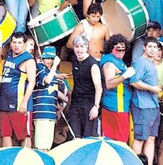
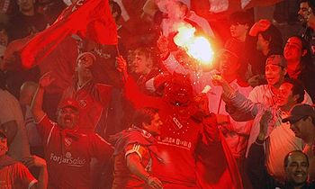
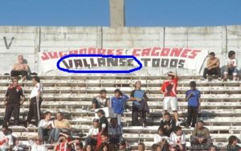

Barrabravas
 De: La Frikipedia, la enciclopedia extremadamente seria.
De: La Frikipedia, la enciclopedia extremadamente seria.
| De la serie tribus urbanas del mundo:
|
| Barrabravas
|
Ejemplo de la tribu
200px
|
| Se armó el tole tole
|
|
| Hábitat
|
Argentina
|
| Inteligencia
|
infrahumana
|
| Frase favorita
|
¡<inserte equipo aquí>, no existís!
|
| ¿Peligroso?
|
bastante, y mucho más si llevas la camiseta de un equipo que no sea de su agrado
|
| Obsesión
|
el furbo
|
| Notas
|
Nunca hicieron la escuela así que no se sabe...
|
«¡Che vigilante vas a cobrar puto!»
~ Homo Barris a otro Homo Barris
«¡No existís!»
~ Homo Barris a otro Homo Barris
«¡Vo agitá!»
~ El Abuelo de la 12 a sus súbditos
«¡Aguante <inserte equipo aquí>!»
~ Homo Barris gritando
«Entradas a los barras? Nooooo...»
~ Mauricio Macri siendo sarcástico
«¡Vas a correr porque sos amargo y vigilante, gato!»
~ Homo Barris a otro Homo Barris
«No a la violencia»
~ Homo Barris mientras golpea a otro Homo Barris
Especie de semi-humanos originados en Argentina. Se cree que son parte del eslabón perdido en la cadena evolutiva entre el Homo Erectus y el Homo Sapiens, llamado por reconocidos antropólogos como Homo Barris. Estos humanoides fueron encontrados por primera vez hace un culo de años, comiendo gusanos vivos y acicalándose unos a otros en unas cuevas. Los lugareños pensaron que eran inofensivos, pero una noche los barras se quedaron sin comida y asesinaron a toda la población, cocinándolos a fuego lento. Las barras bravas son parecidas a la mafia, solo que son más peligrosas, más violentas y considerablemente menos inteligentes.
Tampoco se debe dejar de lado la presencia femenina en esta manada de individuos subdesarrollados este grupo de gente. Que dicen ser del palo y "sentir los colores" cuando en realidad les excita la grasa que chorrea de sus cuerpos y el tono oscuro de su piel, insertándose en el chiquero las populares para ser garchada por algún negro cabeza desconocido que algún homo barris frote su bulto por su culo.
Evolución
Primeros años
La tribu comenzó a reproducirse casándose entre hermanos y primos. Esto produjo un estancamiento permanente de su inteligencia, por lo que nunca llegaron a evolucionar en humanos completos.
Al principio todo iba bien entre los homo barris. Convivían pacíficamente en tres grupos: el de Bebote (en la orilla sur del Riachuelo), el de Alan y el de Rafa (ambos en la orilla de en frente). Pero un día Alan escuchó de un mejor lugar para vivir, con piscinas, casas de playa, y mucho dinero, y movió a su grupo más hacia el norte. Esto a Rafa no le hizo ninguna gracia, maldijo para siempre el nombre de Alan y le prohibió a su grupo mencionar su nombre. En tanto que Bebote, de tarado que era nomás, se enemistó con los dos.
Organización y asentamiento
Muchos años después, cada grupo vivía feliz en su lugar. Los de Bebote se pusieron de nombre Los Diablos Rojos, los de Alan se hicieron llamar Los Borrachos del Tablón, nadie sabe por qué, mientras que los de Rafa se apodaron La 12, en honor al nombre de batalla de una conocida prostituta sueca. Bebote y su grupo se hizo de Independiente, mientras que Alan y Rafa adoptaron los equipos de River Plei y Bosta Juniors, respectivamente.
Pero no fueron los únicos. Conforme el país crecía se iban formando más y más grupos, que se adherían a todos los equipos de 1ª, 2ª, 3ª, 4ª y 5ª división.
Hoy en día los grupos más conocidos son:
- Los Diablos Flojos
- La 12 menos Cuarto
- Los Borrachos del Galpón
- La Golosa Butteler
- La línea 14
- La Guardia Presidencial
- La Banda que Pincha
- La Pandilla de Don Gato
- Los Guerreros del Asfalto
- La Fiel a los Billetes
- Los Forros de Siempre
- Los Marginados de la Villa
- La calibre 22
- La Muñeca Hinchada Más Popular
- La 69 (Sin comentarios)
Consenso con los humanos
Los presidentes de los equipos conjuntamente con los jefes de gobierno de cada ciudad decidieron preservar esta especie histórica, después de todo su exhibición atraería mucho al turismo extranjero y daría mucho dinero. Acordaron regalarles entradas y alimentos a cambio de que acompañaran a sus equipos cada fin de semana.
Aspecto
 Aspecto típico de un barrabrava
Generalmente el Homo Barris es de aspecto grasiento, bastante más tosco que los humanos evolucionados, tiene cortes y heridas en la cara producto de la caza de animales, y no es de su costumbre bañarse en forma seguida (le tienen fobia al agua). Otros rasgos a destacar son: falta de algunos dientes, barriga prominente, uñas amarillas, y piojos y liendres en los cabellos, y ladillas en el chorizo y en el culo.
Vestimenta
Cada grupo se viste con los colores de su equipo, pantalones cortos o a veces sin pantalones, y zapatillas viejas. Llevan cuchillos, navajas, palos y a veces armas de fuego. Tambien bombos y trompetas para dejarnos sordos a todos.
Cultura
Costumbres
 Violentos Apasionados ejemplares de
negros de mierda homo barris de Independiente durante un partido. La foto permite apreciar la belleza de sus inocentes rostros
La vida de un barrabrava consiste en la siguiente rutina:
- Levantarse
- Tomar vino tinto
- Vigilar que nadie de su barrio sea de otro equipo que no sea el suyo
- Ir a robar a algún colectivo/subte/mercado
- Agarrarse a trompadas con alguien
- Comer un asado (hecho con carne de un homo barris rival)
- Consumir "faso"
- Robarle a una anciana de 90 años
- Beber hagua de algún charco
- Revolcarse en el lodo
- Escuchar cumbia en su radio a pilas (robada)
- Rascarse la cabeza (por los piojos)
- Robar un banco usando armas de fuego
- Ir a la cancha con su grupo
- Cantar/robar/gritar/putear durante el partido
- Matar a alguien y/o algo
- Jugar al fútbol (de manera tosca y bruta) en cualquier lugar con algunos homo barris de su grupo
- Consumir cocaína
- Practicar tiros con una pistola/escopeta/ametralladora
- Gritar que ama a su equipo
- Afilar su cuchillo/navaja/machete
- Gritar que odia a un equipo rival
- Pelearse
- Drogarse con una lata de pintura
- Discutir a los gritos con la persona que está del otro lado del espejo
- Romper el espejo de un puñetazo
- Tomar mate
- Gritar un intento de palabra o frase (indescifrable)
- Eructar
- Pelear contra otro barrabrava
- Ir con el resto de su barra brava a pelearse a muerte contra otra barra brava
- Practicar pelea con el primer ser vivo que se le cruce
- Tomar vino tinto
- Pelear junto a su grupo contra la fuerza policial
- Comer un choripán (robado)
- Apretar a los jugadores
- Tomar fernet (puro)
- Aspirar pegamento
- Tomar alcohol etílico (robado) con dos gotas de agua de la canilla
- Levantar pesas para tener más fuerza (en realidad levanta chatarra que encuentra en la calle)
- Echarse un pedo
- Tener sexo con una prostituta
- Tomar vino tinto
- Beber cerveza
- Consumir paco (o "pasta base")
- Acuchillar a unos cuantos
- Pegarle a algún ser vivo u objeto inanimado (en caso de no encontrar algo vivo)
- Agredir a un policía
- Robarle al policía
- Violar a un perro
- Ir a su casa (si es que tiene)
- Declararle su amor al vino tinto
- Dormirse
Nota: mientras está dormido puede pelearse, acuchillar, matar, robar, agredir, insultar, tomar vino y "cantar" cantitos de su equipo.
Religión
Los Homo Barris son politeístas, es decir, adoran a varios dioses o diablos. Ejemplos:
- Los Diablos Rojos adoran a Bochini y a Burruchaga
- La 12 a Diego Maradroga y a Juan Román Riquelme
- Los Borrachos del Tablón a Ramón Díaz y a Enzo Francescoli
- La Hinchada Más Popular a Marcelo Bielsa e Isaac Newell
- La Buteler a Marcelo Tinelli y al Papa Francisco I
Arte
Los barrabravas tienen predilección por la cumbia y el rock de su país, en las que se inspiran para formar las letras de sus canciones, que hablan de muerte, venganza, insultos, revanchas, etc.
También poseen amplísimos conocimientos de filosofía y literatura, pues son los más famosos hacedores de banderolas o "trapos" como ellos las llaman, con frases de lo más filosóficas y profundas. Inspirados en pensadores humanos como Sócrates, Platón o la Mona Jiménez, los barras demuestran su talento para la prosa y la poesía.
Alimentación
 Barras demostrando su talento literario
Los Homo Barris se alimentan de casi todo lo que comen los humanos, además de degustar carne cruda y sangre de los grupos rivales.
Lenguaje
Los barras tienen un lenguaje peculiar y algo parecido al castellano de los humanos. Consiste en coger el idioma español y juntar casi todas sus palabras, añadiendo una cantidad acojonante de groserías:
- "Ehh bludo vo no teneaguante amrrgooo, vení que te cagamapalo"
- "Chupme la poronga, puto"
- "eh gato , bo ba a kobra hoy gil!"
- "bo so amego de la yuta de probincia y kapital"
- "bo ,no te la awanta en la calle"
Así como generalmente la primera palabra de un humano es "mamá", la primera palabra de un barrabrava es quémirápedazodeputovigilantetevoyamatá.
Los barrabravas y los humanos
Los barrabravas viven apartados de los humanos (Homo Sapiens), pues no se registra relación o contacto entre ellos (salvo cuando las peleas de los Homo Barris dejan "daños colaterales").
Es recomendable, en caso de querer hacer contacto, las siguientes acciones:
- Presentarse con un saludo respetuoso o reverencia
- Presentar una ofrenda (una banderola o "trapo" rival a manera de trofeo de guerra o una sustancia de las que ellos consumen)
- Decir una frase en el idioma de la tribu
- Cantar una canción representativa de la tribu
- Despedirse
- No se recomienda hacer contacto cuando sus equipos pierden, si no quieres sufrir una muerte lenta y dolorosa.
Proyección de la especie
Mientras exista este deporte de mierda el fútbol, seguirán existiendo los barras.
Actividades que desarrollan
- Decoración de estadios. Para ello utilizan telas (en lenguaje técnico lo' trapo') con los colores del equipo del que son
mercenarios hinchas y que son colgadas en cualquier cancha en que éste dispute un partido. Estas telas se ubican en forma estratégica para que los negros los barras se tomen de ellas con una mano y entonen cantitos contra la otra hinchada gesticulando con la mano libre. También suelen colgar otros trapos contra el vallado , con alusiones a bandas de rock o los lugares de los que proceden los tragaleches barras. En ete último caso, al final añaden la palabra "Pte", apócope de la palabra presente, para denotar la supuesta simpatía que la población de dicha localidad profesa al equipo.
- Animación de fiestas. Porque el furbo
casi nunca lo es. Para ello entonan cánticos primitivos que exaltan las virtudes del propio equipo o denigran al rival. La mayoría de las veces son canciones robadas a otras hinchadas a las que nada más le cambian el nombre del equipo (no sea que por pensar mucho digievolucionen y se vuelvan gente decente). Estos cantos son acompañados por el sonido de un bombo y/o una trompeta. En determinadas ocasiones encienden bengalas para hacer humo y reducir así la visibilidad en el campo de juego. Cabe destacar que la pirotecnia está prohibida en Argentina desde la tragedia de Cromagnon y la policía tiene orden de decomisarla en el ingreso al estadio, así que tienen que ingresarla furtivamente introduciéndola en el propio ano. Un barra experimentado es capaz de ingresar entre tres y cinco bengalas con este método.
-
reVenta de entradas. Servicio útil para los que trabajan y no quieren no pueden hacer la fila durante 500 horas para conseguir una como los hinchas normales. Todavía se desconoce cómo las consiguen.
- Parking y valet en las inmediaciones del estadio. Cobrando una módica suma por cuidar el vehículo y permitir estacionarlo en una calle cercana al estadio (porque la calle es de su propiedad).
- Oxigenación y recambio de planteles. Para ello se valen de
aprietes la persuasión. Lo utilizan para convencer a un jugador o DT de que su vida corre peligro le espera un futuro mejor en otro club.
Vocabulario completo
- Puto
- Botón
- Fierros
- Correr
- Trapos
- Aguante
- Plaza
- Amargo
- Estación
- Puto
- Pecho frío
- Correr
- Matar
- Cagón
- Aguante
- Tirapiedras
- Trapos
- Puto
- Quemar
- Micro
- Amargo
- Yuta
- Tiros
- Subte
- Correr
- Terminal
- Puto
Enlaces útiles
| Tribus Urbanas
|
 Universales Universales
 Españolas Españolas
 Argentinas Argentinas
 Chilenas Chilenas
 Colombianas Colombianas
 Mexicanas Mexicanas
 Peruanas Peruanas
 Venezolanas Venezolanas
|
Autor(es):
- Diegocon13
- Lljosemll
- Deathhadou
- Levicorpus
- Chukiiin
- Ricardoxxxlo
- Evidence nobbe
- Iori
- Victortecoje
- Robertoleproso
Frikipedia 2005-2016, Licencia
GFDL 1.2 - Extraído por FrikiLeaks